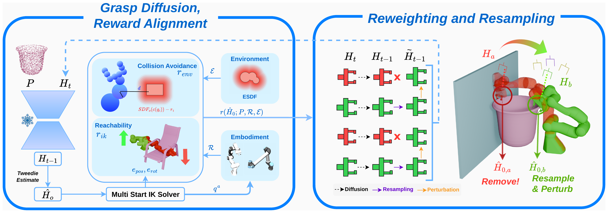

Given an full object point cloud $P$ and a pretrained Cartesian space grasp diffusion model, the reverse diffusion produces grasp hypotheses $H_{t-1}$ which are mapped to their clean grasp estimates $\hat{H}_0(H_t)$ using the Tweedie estimate, which is evaluated against deployment specific feasibility rewards. The resulting reward $\mathbf{r}(\hat{H}_0;P,\mathcal{R},\mathcal{E})$ combine embodiment and environment information through multi-start IK, reachability and signed geometric clearances. These rewards instantiate the Feynman--Kac twisting potential used to re-weight and resample ($\mathbf{H}_{b}$) the particle population in turn removing particles ($\mathbf{H}_{a}$). Thus embodiment and environment constraints act through population level reweighting and resampling rather than modifying individual denoising transitions, enabling mode level steering toward feasible regions while retaining the multi modal structure of the pretrained grasp prior.